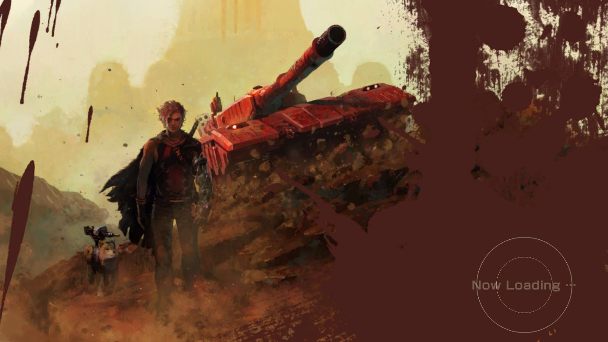
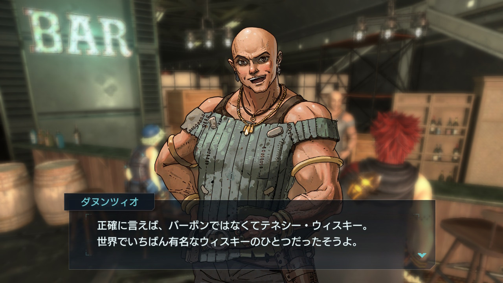

私の立ち位置
私のプレイスタイル
- RPGが好みで、クエスト経過でNPCの会話が変わることをチェックする。またドラクエでは本棚を全てチェックするプレイスタイル。
- 物語要素が好きなので、低難易度でサクサクプレイすることを好む。
メタルマックス・サーガ歴
- メタルマックス（FC）※友人宅で少し遊んだ程度
- メタルマックス2（SFC）
- メタルマックスリターンズ（SFC）
- メタルサーガ～砂塵の鎖～（PS2）
- メタルマックス3（DS） ※後半部分までプレイしたがクリアはしていない
- メタルサーガ〜荒野の方舟〜（iOS） ※インストールして少し遊んだだけ
- メタルマックス ゼノ（PS Vita） ※数時間程度で断念
- メタルマックス ゼノリボーン（Switch）
シリーズの好きな作品
- メタルマックス2（SFC）：実質的に一番最初にプレイしたメタルマックスで自分にとって原点。
- メタルサーガ～砂塵の鎖～（PS2）：オーソドックスなメタルマックス2フォロワー。長らく休んでいたゲームを社会人になったことで再開した時期だったのもあって、遊ぶのにちょうどよかった。
前作「ゼノ」の全体評価
- 端的にいうと「悪夢」。1～2時間程度で嫌になってやめてしまった。
- いきなりレッドウルフに乗るのは知っていたが、実際にプレイしてみるとシリーズの象徴的クルマが既に手に入っているという状況がショックだった。
- 一番嫌だったのは「メタルマックスがエロゲーになってしまった」という第一印象を持ってしまったこと。キャラデザインに織田non氏を起用したことで悪い予感がしていたが、序盤からあの展開だったのでそう思ってしまった。 ※念の為、記載しておくが織田non氏は悪くない
- 「開発資金がないから NPC を増やせなくて、人類絶滅という設定なんだろうな」という悪印象もあった。
「ゼノリボーン」の評価
低かった事前評価
- はっきりいって買うつもりはなかった。
- ディレクターの友野氏の動画配信「下品なシモネタ、ダメ絶対」（※Youtube）を観たり、映画出身であることを知って興味を持ち、インタビュー記事も自分から探して読むようになった。
- その中で“僕はクールであることが「メタルマックス」の魅力であると思っています”（※4gamer） という発言を見かけて、私が好きではないメタルマックス3や4のようなポップ路線とは異なるものになると思って購入を決めた。
プレイ後の評価
- バグを含めて不満点はたくさんあるが、RPGとして、メタルマックスとしての本質的なものがちゃんとある。一言でいうと「クオリティは低いが魂は合っている」ゲーム。
- 敵の配置や画作りなど、いろんなところで身体性を感じた。
- 拠点があって、NPCごとに会話が進展していくスタイルで、つい最近20周年を迎えた「ベアルファレス」の雰囲気を感じた。
- 前作で嫌悪感につながった織田non氏の絵も、ゼノリボーンの1周目を終えた後には全く問題がなかったので、月並みだが第一印象は大事だと思った。
ゼノリボーンで良かった点
- 【システム面】
- インフレ上等の成長デザイン：強い武器を見つけてぶっ放すというシンプルさ。
- 何をするにも実績が計測されていて、ご褒美があること：今回は経験値だけだったが、経験値を貰えるだけというシンプルさも負担（義務）にならないのでよかった。
- シンプルな超改造のシステム、あまり気にならない★システム：個人的に3以降追加された★システムが好きではない。
- クルマの運転に面白さを持たせたこと：無駄に「超信地旋回」したり、砂丘を使ってジャンプした。
- 敵の配置：初見の「台東防衛特区」の雰囲気、目の前に軍艦ザウルスがいて、ザコ敵に先制攻撃しようと近づくとビルの死角に潜んだ敵にターゲットされること。この視線誘導も含めた敵配置からくる身体性のようなものはシームレス3D化しなければできなかったことだと思う。
- 【表現面】
- クルマの画作り：クルマに犬や仲間が乗ったり、野バスの乗車下車、装甲タイルが貼ってあることがわかるようになったりしたこと。
- 明暗の強調：とくに暗いトンネルやダンジョンの中で、突然現れる「うろつきポリタン」（しかもデカい）やライトが赤く光っている戦車タイプの敵。光源が2つある野バス。※ただし光源についてはネガティブな部分でもある
- フレーバーテキストに現実世界への参照があること：「新大橋」や「東京駅」の説明、バーでのお酒の解説がよかった。前作をほとんどやっていないので、前作にも同様のものがあったのかは知らない。

ゼノリボーンの不満点（バグは除く）
- 【システム面】
- マップが狭い、正確にいうと窮屈：このせいで、序盤の賞金首が逃げ推奨になっていて、何を楽しんだらよいのかわからない。マップが広かったら、強制された「逃げる」ではなく選択肢の一つとしての「やり過ごす」になっていたはず。
- 序盤の難易度カーブ：序盤はクルマの操縦にも慣れていないので、「逃げてばかりでつまらない＋操作も不慣れでストレス」というダブルパンチ。また、「視線切り」を使った「ズル」を公式が推奨しているのも萎える。
- 障害物を乗り越えられないことも窮屈さを感じる原因：クルマ操作をリアルに寄せたのだから、マップもリアルに寄せてもらわないとストレス。何のための無限軌道なのか。
- クルマでの曲がりの感度が良すぎて Switch で遊びにい：慣れるが感度はもう少し緩くてもよかったかもしれない。もしくは設定でクルマ運転時の左右感度を調整できるようにするなどの工夫がほしかった。
- 先制攻撃がめんどくさい：最低限、ワンボタンで先制攻撃するようなショートカットがほしい。さらにいえば、昨今のスマホゲームのように先制攻撃も含め自動戦闘でもよいと思った。FF12のガンビットのようなシステムはCユニットが存在するメタルマックスの世界設定にも合っているので、その手の要素がほしくなった。
- クルマに強さがない：これは「クルマに個性がない」とも言い換えられるが、どんなクルマも穴1に特化した構成をして「機動嵐撃」してしまうのが正解みたいな感じになっている。強さを生み出しているのは、クルマの性能ではなく人間スキルになってしまっている。こうしたものは本来はクルマのシャシー特性や今作未登場のCユニットに与えられるべき性能だと思う。
- 上記にあわせて S-E が頼りない：「一撃必殺神話」なのに全然必殺感がなかったり……。
- 戦闘中の移動にシステム的な意味がない：似たような戦闘システムのゼノブレイドには側面攻撃の概念はあるのでそうした要素がほしい。ただし、その場合は今よりも一層自動戦闘のシステムを洗練させる必要があるだろう。
- 追加して、戦闘時の非操作キャラの勝手な移動がよくわからない：システム的にエンゲージした後は距離は関係なくなるはずなのに、敵に突っ込んでいくせいで滑稽に見える。
- エンディングがスキップできない：ボス周回させる要素があるのだから、スキップさせてほしい。（追記：アップデートで超高速スキップできるようになった）
- アイテム操作まわりの億劫さ：レスポンスが悪いことに起因しているのだとは思うが、並べ替えや連続使用の不便さ、最大個数購入するためのショートカットがないなど。
- 【表現面】
- 様々な要素の説明が足りない：属性、対象の「円形大5回、1発ずつ」の意味がわからない。また例えば「エクスカリバー」に物理耐性低下があるなども説明されていない。そもそも物理耐性低下と守備力低下の違いは何か……かんがえねば、かんがえねばならぬ。
- 属性が反転して回復してしまうのを色で区別しているせいで気づきにくい：色での判別はアクセシビリティ（色弱）的にも問題があるので、回復の数値には背景をつけたり、回復エフェクトをつけるなどの工夫がほしい。
- 人間操作時の旋回や、衝突判定などのめんどくささ：また暗所ではライトが揺れて動きすぎるせいで、視覚に対して負担があった。ライトに関してはよい点でもあるので、うまい着地点を見つけてほしい。（追記：アップデートで人間時の移動が軽やかになった）
- クルマ移動時のアイテム使用で乗車下車の演出はいらない：乗り降りコマンド時の演出があれば、十分伝わっていると思う。戦闘中は乗車中かどうかでゲーム的に違いがあるので今のままでよい。
- アイアンベース帰還時の ポM の「回復シークエンス」のセリフがいらない：このせいでボタンを押す必要がある。破損があったらトンカンする音、弾薬補給の音、死亡していたら蘇生の電撃音など、帰還時の状態に合わせて効果音を鳴らすだけでよい。ついでに帰還時の状態にあわせてロード画面で補給と修理、蘇生などを表現してもよい。ボタンを押す回数は必要最小限にしてほしい。
- 賞金首を倒した後に、賞金が支払われるアニメーション演出はいらない：賞金額がいくらだったかわからないし、スクショしたときに「0G」表記なのは寂しい。「済」マークだけでよい。
次回作に向けた要望
全体として：今作の方向性を支持する
- 今作の方向性を支持する。ただし、クオリティは上げてほしい。とくにマップの窮屈感をなくして、操作感を向上してほしい。
- ストレスを感じる要素（先制攻撃時のボタンを押す回数、運転中のアイテム使用時の乗り降り演出）など、冗長になりすぎているものがあるので、そこは取り除いてほしい。コマンド戦闘RPG時代にメタルマックスを特徴づけていたのはCモードやDモードといったリアルタイム戦闘っぽい演出や、コマンドのショートカット配置にあったはず。これはコマンド戦闘そのものは決して「メタルマックスらしさ」ではないという意味でもある。
- クルマに乗っていなくてもクルマ装備を入手できるという「思いっきり」を見せたのだから、その他の部分でも思いっきりを見せてほしい。
- とはいうものの、クルマ装備の件に関しては昔の仕様（クルマ装備の入手にはクルマが必要）に戻ってもよいとは思う。ただ、そうする場合は、そういうゲーム性であることを徹底してほしいし、レンタルタンクのシステムもほしくなる。
- あっさりしすぎていたメインストーリーは、もっと肉付けがほしい。（詳細を再追記で後述）
システム面：クルマの個性、Cユニット、拠点要素
- 最序盤だけでよいので難易度カーブを意識してほしい。今作のように「逃げ」からの「視線切り」はどうかと思う。新人ハンターや出戻りハンターを獲得したいなら、まず最初に面白さを体験させるべきだと思う。なんなら本編とは別にチュートリアルモードを用意して、本編は放リ投げるというのもありだと思う。
- Cユニットを復活させてほしい。クルマの個性のひとつとなるようにしてほしい。そもそも現実世界で戦車は1人では運用できないからこそCユニットがあるわけで、メタルマックスの世界観を表現する重要なアイテムだと思う。命中率や回避率を犠牲に装填速度があがる（コマンド待機時間が非常に少ない）Cユニットなどがほしい。
- クルマの強さと人間の強さを正しく分離してほしい。「機動嵐撃」などのクルマに関する直接的なスキルはシャシーやCユニットに付与するようにしてほしい。運転の上手さは、命中率・回避率・会心率、コマンド待機時間の減少など、補助的な部分で反映してほしい。
- 今作のアイアンベースのように拠点制を取るのなら、仲間（拠点内のNPC）を増やすことで改造の選択肢が増えていくようになるようにしてほしい。メカニックを拠点につれてくるとクルマや兵器のハード性能の改造ができたり、プログラマを連れてくるとCユニットの調整ができて命中率補正と回避率補正の数値を変えられるようになったりなど。前作のゼノはそうだったらしいが……。
- 上記の拠点強化要素だが、前提クエストやメインストーリー進行度による制限がなければ「マップの奥に進んで強い装備を拾う」とゲーム的には一緒になり、自由度を担保できるはず。
- バトー博士（新車製造）、転送装置とその事故で特別なダンジョンに行くなど、歴代メタルマックスのシステムを再導入してほしい。映像作品がセリフではなく画で物語るように、ゲームはシステムで世界観を語ってほしい。フレーバーテキストだけでは物足りない部分はある。
表現面：NPCを増やす、物語要素
- NPCを増やしてほしい。会話のたびに止め絵がでるのは特定の重要キャラだけで十分だが、会話ウィンドウしか出ないレベルの一般NPCを出してほしい。生存者がいる世界を望む。
- 現実世界への参照をもっと増やしてほしい。「ウォッチドッグス」や「アサシンクリード」のように観光案内レベルとまではいかなくても、現実世界への参照があると楽しめる。
- 「神話公司」や「ブラド・コングロマリット」に関連するストーリーやフレーバーテキストを増やしてほしい。メタルマックスという虚構世界において、この2社は、文字通り「史実」としての扱いを受けるべきだと思う。メインストーリーやクエストなど、いろんなものに絡んでほしい。
- ドラム缶は押したい。いや、新生メタルマックスなので押すのではなく磨いてもいい。クエスト名「磨き、その先へ」で、その街のバーでは「ウソ」が飲める、とか。
コミュニティ面：Discord を使ってほしい
- 兵器データなどを公開して攻略Wikiの作成をメタルマックスサポーターに依頼をしてはどうか。今作の場合も属性の意味や強化・弱体の効果の詳細など、公式の材料を出してほしい。その際に Discord が利用しやすいと思う。
- ファンとの交流や議論をしたいのであれば、やはり オープンな Twitter ではなく、チャネルごとに話題を絞れる Discord の利用を検討してもらいたい。すでにあるのかもしれないが……。
- 現在、有志の Discord があるが公式なものがあったほうがよい。私は「グウェント」というゲームの「公式パートナー」を拝命しているが、グウェントの場合は、一般プレイヤー向けの公式 Discord の他、公式パートナー専用 Discord などがある。
- Discord はクローズドな環境であり、表に出しにくい議論も可能である。また、音声チャットや画面共有も可能なので、何かと議論はしやすい。
- リアルイベントの感想なども、全世界に公開されている Twitter では言いにくいが、Discord 内なら参加者だけが閲覧投稿できるチャネルを作って議論することもできる。
- ただし、クローズドな環境とはいえ、情報流出の危険性は常にあるので、最も熱心なファンの反応を見たり、議論をする場として使うことをおすすめする。
追記
難易度と周回プレイについて
- ※Wood-Boxさんの記事「周回プレイや難易度への希望」（外部リンク）を受けて追記。
- 【難易度面】
- こまかい難易度難易度設定は必要ないというのは感じた。敵配置やドロップテーブルの変更も考えても「ノーマル」「ハード」「ラグラロク」の3種類でよかったのではないか。
- 別ゲームの例では「FF7R」は「悩まなくてもいいイージー」「システムに習熟する必要のあるノーマル」「育ち切ったあとのチャレンジモードとしてのハード」というようにデザインされていると感じた。
- 「FF7R」は名称が「イージー」「ノーマル」「ハード」になっていたが、実質的には「カジュアル」「コア」「チャレンジ」と言い換えられて、難易度の違いよりもプレイ感覚やプレイ目的の違いを念頭に置いて難易度設計がされていたように感じた。
- 一方「ゼノリボーン」では難易度設計にそういった「思想」を感じなかった。※別モードである「サバイバル」モードには思想があった
- 我々は「悩まずサクサクとプレイしたい」「ギリギリの戦いがしたい」といったように「得られるプレイ感覚」をそれぞれに期待しているので、パラメータの違いよりもプレイ感覚やプレイ目的の違いといった質的なものをベースに難易度設計してもらいたいと思う。逆に言うと「イージーが簡単すぎる」「ハードが難しすぎる」というように、あるべき方向に振り切れているのは OK である。
- 【周回プレイ面】
- 私は「強くてニューゲーム」よりもゼロから始める通常の「ニューゲーム」を好むが、「ゼノリボーン」に関してはそうしたい気持ちにならなかった。
- それはやはり物語要素が薄いのと「最高難易度でアイテムを掘る」という設計のゲームだからだと思っている。新しくやるより今のデータを継続して超改造する誘惑が勝ってしまい、「ニューゲーム」をしたくならなかった。これ自体は「そういうゲームなので」で構わないのだが、少し物足りない。
- 具体的にいうと、「カタストロプスΣ」を倒してしたあとは自分のパラメータを見てニヤニヤするぐらいになってしまうので、その後のエンドコンテンツ的な楽しみを作ってほしいとも思った。「FF7R」のバトルシミュレータのように、仮想空間で戦うという設定なら敵側も Lv1～Lv999 という形でパラメータをいじって量的にいくらでも強くできるはずなので、そういうコンテンツを用意してもらいたいと思った。
- 仮想空間でのシミュレータといえば、マップから敵を除外してコース設定してドライブするというモードもあったらよかった。敵に気を取られずに運転する場所（運転の練習にもなる）がほしかった。タイムも記録すればゲーム的にも面白くなり SNS で盛り上がるだろう。
再追記
必要な“ストーリー性”について
- 「メインストーリーは、もっと肉付けがほしい」と記述したが、これは「ドラマチックなメインストーリー」を求めているわけではない。
- 今作の場合、主人公タリスの「動機」が前作ゼノをやっていないとわからないので、「前に進む動機」をはっきりしてほしいという意味である。「頼まれたからやる」のではなく、自発的な意思、すなわちアイデンティティとかレゾンデートルのようなものがほしい。
- また我々プレイヤーにとって「前に進む動機」はストーリーだけで語られるものではない。マップが黒塗りされていて、それを全部“開く”というのも動機になる。そういった部分も今作で足りていなかったように感じる。
- 「ストーリー」と言ってしまうと「ファイナルファンタジー」のようなストーリー重視のゲームを求めているように聞こえてしまうが、私が本当にほしいのは「動機」である。その中でイベント的に「恋愛」「死別」「親との和解」…… etc. というようなドラマがあればよいと思う。
- 「メタルマックス」は、ゴールが設定されている「冒険（それこそ魔王退治のようなもの）」というよりは日常を繰り返す「稼業」のゲームだと思っている。だから「稼業」を辞めることで即エンディングになるという部分に、単なるギャグに留まらない現実味があったのだと思う。虚構世界での「日常」だからこそ、他にも生存者がいてほしいと私は思う。抽象的で伝わりにくいが他ゲームで本質が似ていると思ったものを下記に挙げる。
- 【大航海時代IIの例】
- 「大航海時代II」（SFC版をプレイ）は「動機」を軸としたあっさりしたストーリー（必須イベントと言ったほうが正確）があるだけで、基本的にはまだ行ったところのない場所（未踏区域のマップは黒塗り）へ航海するゲームになっていた。その航海中に交易や海賊行為を行わないとリソースがなくなって身動きが取れなくなる、というのがゲーム性の部分である。
- 最初に主人公キャラを選ぶが、キャラごとに設定があり「プレステ・ジョアン王国を探せ」「兄の仇を討て」「私掠船を率いて敵国商船を略奪しろ」「世界地図を作れ」のような動機が与えられる。
- その中でキャラごとに異なっている条件をクリアするとイベントが進むという仕様で、それ以外は自由である。行けるものならゲーム開始直後にリスボンから長崎や堺に行ってもいい。（※序盤は外洋の長期航海に耐える船に乗れるほどリソースがないので無理だと思う）
- ゲーム性に関していえば、「交易や海賊行為で金を稼ぎ、積載量が多くて速くて海戦に勝てる船に乗って航海を続ける」というゲームプレイの繰り返し部分はメタルマックスに似ている。メタルマックスの過去作では主砲や S-E の弾数や装甲タイルといったリソース管理も重要で、赤字にならないようにハンター稼業をしていたことを覚えている。
- ストーリーに関していえば、「アバウトな大目的はあるが、小目的は管理されておらず自由。航海という日常の中で、大目的を追う」という構成は「メタルマックス的」だと思う。